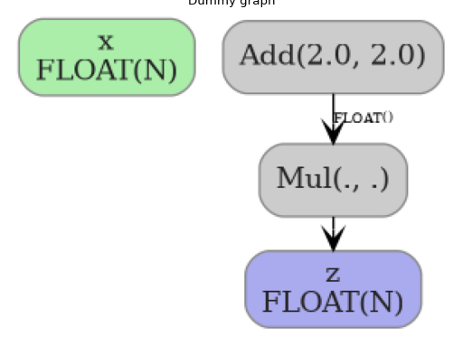
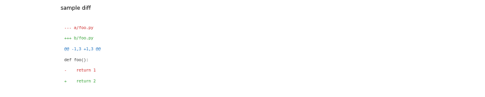

yobx.doc¶
- yobx.doc.demo_mlp_model(filename: str) ModelProto[source][source]¶
One model obtained with the following.
import torch from yobx.helpers.onnx_helper import pretty_onnx from yobx.xbuilder import OptimizationOptions from yobx.torch.interpreter import to_onnx from yobx.translate import translate class MLP(torch.nn.Module): def __init__(self): super().__init__() self.layers = torch.nn.Sequential( torch.nn.Linear(10, 32), torch.nn.ReLU(), torch.nn.Linear(32, 1), ) def forward(self, x): return self.layers(x) x = torch.rand(3, 10) onx = to_onnx( MLP(), (x,), input_names=["x"], options=OptimizationOptions(patterns=None) ) print(pretty_onnx(onx)) print(translate(onx, api="onnx-short"))
- yobx.doc.draw_graph_graphviz(dot: str | ModelProto, image: str, engine: str = 'dot') str[source][source]¶
Draws a graph using Graphviz.
- Parameters:
dot – dot graph or ModelProto
image – output image file path
engine – dot or neato
- Returns:
Graphviz output
The function creates a temporary file to store the dot file.
- yobx.doc.get_latest_pypi_version(package_name='yet-another-onnx-builder') str[source][source]¶
Returns the latest published version.
- yobx.doc.plot_dot(dot: str | ModelProto, ax: matplotlib.axis.Axis | None = None, engine: str = 'dot', figsize: Tuple[int, int] | None = None) matplotlib.axis.Axis[source][source]¶
Draws a dot graph into a matplotlib axis.
- Parameters:
dot – dot graph or ModelProto
ax – optional matplotlib axis; if None, a new figure and axis are created
engine – dot or neato
figsize – size of the figure if ax is None
- Returns:
matplotlib axis containing the rendered graph image
(
Source code,png,hires.png,pdf)
{kind=link}
{kind=link}
- yobx.doc.plot_histogram(tensor: ndarray, ax: plt.axes | None = None, bins: int = 30, color: str = 'orange', alpha: float = 0.7) matplotlib.axis.Axis[source][source]¶
Computes the distribution for a tensor.
- yobx.doc.plot_legend(text: str, text_bottom: str = '', color: str = 'green', fontsize: int = 15) matplotlib.axes.Axes[source][source]¶
Plots a graph with only text (for sphinx-gallery).
- Parameters:
text – legend
text_bottom – text at the bottom
color – color
fontsize – font size
- Returns:
axis
- yobx.doc.plot_text(text: str, ax: plt.axes | None = None, title: str = '', fontsize: int = 6, line_color_map: dict | None = None, default_color: str = '#333333', figsize: Tuple[int, int] | None = None) matplotlib.axis.Axis[source][source]¶
Renders a block of text as a matplotlib figure, with optional per-line colour coding based on the first character of each line.
Typical use-case: rendering a unified diff so that sphinx-gallery captures the example as a figure.
- Parameters:
text – the text to render (newlines split into rows)
ax – optional matplotlib axis; if None a new figure and axis are created
title – optional axis title
fontsize – font size for the rendered text
line_color_map – mapping from a line’s first character to a colour string (e.g.
{"+": "green", "-": "red", "@": "blue"}). Lines whose first character is not in the map use default_color.default_color – colour for lines not matched by line_color_map
figsize –
(width, height)in inches; only used when ax is None
- Returns:
the matplotlib axis
Example rendering a unified diff:
from yobx import doc diff_text = some_patch.make_diff() ax = doc.plot_text( diff_text, title="my patch", line_color_map={"+": "#2a9d2a", "-": "#cc2222", "@": "#1a6fbf"}, )
(
Source code,png,hires.png,pdf)
{kind=link}
{kind=link}
- yobx.doc.reset_torch_transformers(gallery_conf, fname)[source][source]¶
Resets torch dynamo for sphinx-gallery.
- yobx.doc.rotate_align(ax, angle=15, align='right')[source][source]¶
Rotates x-label and align them to thr right. Returns ax.
- yobx.doc.save_fig(ax, name: str, **kwargs) matplotlib.axis.Axis[source][source]¶
Applies
tight_layoutand saves the figures. Returns ax.
- yobx.doc.title(ax: plt.axes, title: str) matplotlib.axis.Axis[source][source]¶
Adds a title to axes and returns them.